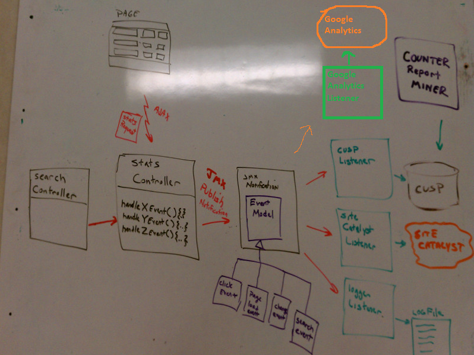
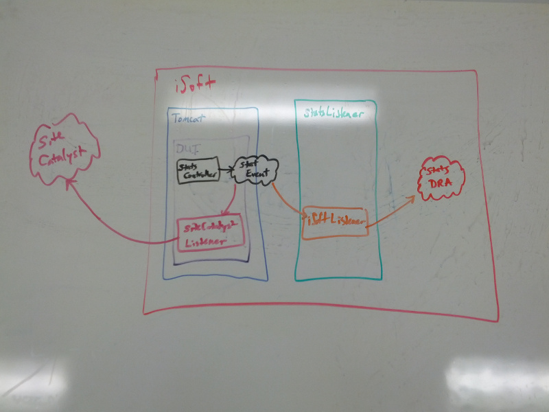

As part of the Discovery UI beta program, we were tasked to record page loads and element clicks on the pages to help our product people track exactly which UI features were being used. Several statistical tracking suites were proposed including Omniture (Site Catalyst), NewEgg and Google Analytics. We also had the additional requirement of recording all of the same information that we track externally as isoft transaction stats, so that we could produce our own reports if need be.
We decided that adding several 3rd-party javascript libraries to our project to track the same statistics seemed troublesome. We did not want to have every developer know how to add site catalyst tracking to an html link and google analytics to each element at the same time.
To facilitate this, we came up with our own statistical abstraction for each event that we cared about. We created an object for page loads, element clicks and element changes (for example a pulldown value). We added our own javascript code to these elements and pages to record things once (via an ajax request to one of our controllers).
The controller builds a java object to represent the event and uses JMX Notifications to publish the event object once. By using the JMX notification system, this allows us to have multiple classes subscribe to or listen for these events.
In our current design we have an iSoft listener (shown as CUSP in diagram below), a Site Catalyst listener, and a Logger Listener. The iSoft listener can record transaction stats in iSoft (See Special iSoft section below), the Site Catalyst listener can record the statistics in Site Catalyst and the Logger listener writes our events out to our logs. (For an example of how we register a listener see here and look for a bean named exporter)
If we needed to add a new recording mechanism (e.g. Google Analytics) then we would simply write a class that can record statistics to Google Analytics, and have that class listen for the correct types of events.
We have a rule that there will be no usage of iSoft code within our war file. This allows our war to be easily portable and runnable in any servlet container, not just an iSofted container. This is another reason why we chose to use JMX Notifications as the mechanism to share our stats events. Our iSoft listener is actually running in its own VM outside of Tomcat. The StatsListener process is running an iSoftListener that is subscribed to relevant events, and when an event is published, the listener records the stat in the stats DRA.
